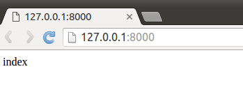

视图
后台管理页面做好了，接下来就要做公共访问的页面了。当我们刚刚在浏览器中输入 http://127.0.0.1:8000/admin/ 之后，浏览器显示出了后台管理的登录页面，那有没有同学想过这个服务器是怎么给我们找到这个页面并返回呢？/admin/是我们想要请求的页面，服务器在收到这个请求之后，就一定对应着一个处理动作，这个处理动作就是帮我们产生页面内容并返回回来，这个过程是由视图来做的。
对于django的设计框架MVT，用户在URL中请求的是视图，视图接收请求后进行处理，并将处理的结果返回给请求者。
使用视图时需要进行两步操作：
* 1.定义视图函数
* 2.配置URLconf
1.定义视图
视图就是一个Python函数，被定义在views.py中。
视图的必须有一个参数，一般叫request，视图必须返回HttpResponse对象，HttpResponse中的参数内容会显示在浏览器的页面上。
打开booktest/views.py文件，定义视图index如下
from django.http import HttpResponse
def index(request):
return HttpResponse("index")
2.配置URLconf
查找视图的过程
请求者在浏览器地址栏中输入url，请求到网站后，获取url信息，然后与编写好的URLconf逐条匹配，如果匹配成功则调用对应的视图函数，如果所有的URLconf都没有匹配成功，则返回404错误。
一条URLconf包括url规则、视图两部分：
- url规则使用正则表达式定义。
- 视图就是在views.py中定义的视图函数。
需要两步完成URLconf配置：
- 1.在应用中定义URLconf
- 2.包含到项目的URLconf中
在booktest/应用下创建urls.py文件，定义代码如下：
from django.conf.urls import url
from booktest import views
urlpatterns = [
url(r'^$', views.index),
]
包含到项目中：打开test1/urls.py文件，为urlpatterns列表增加项如下：
url(r'^', include('booktest.urls')),
test1/urls.py文件完整代码如下：
from django.conf.urls import include, url
from django.contrib import admin
urlpatterns = [
url(r'^admin/', include(admin.site.urls)),
url(r'^', include('booktest.urls')),
]
请求访问
视图和URLconf都定义好了，接下来在浏览器地址栏中输入网址：
http://127.0.0.1:8000/
网页显示效果如下图，视图被成功执行了。
